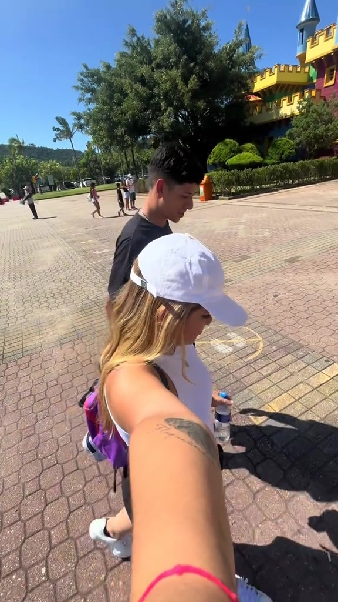
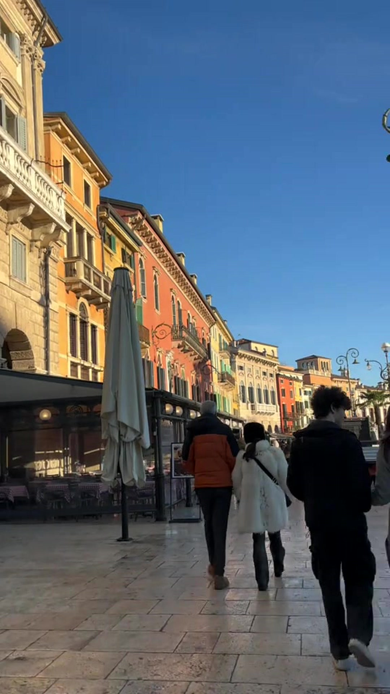
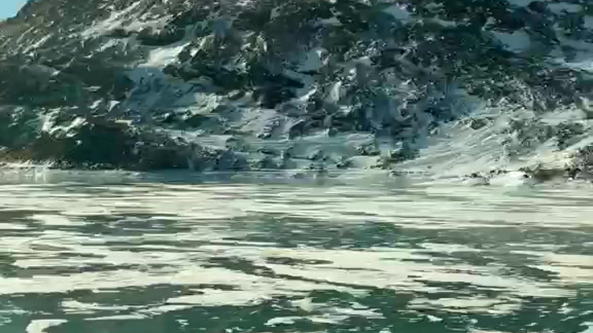
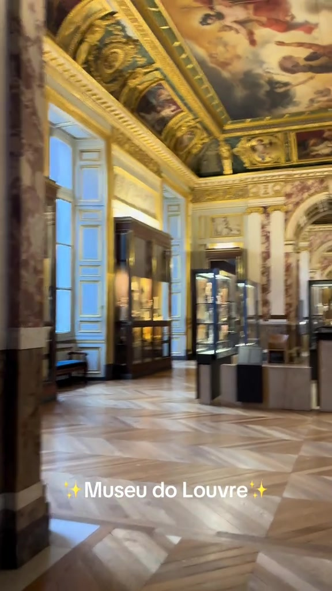
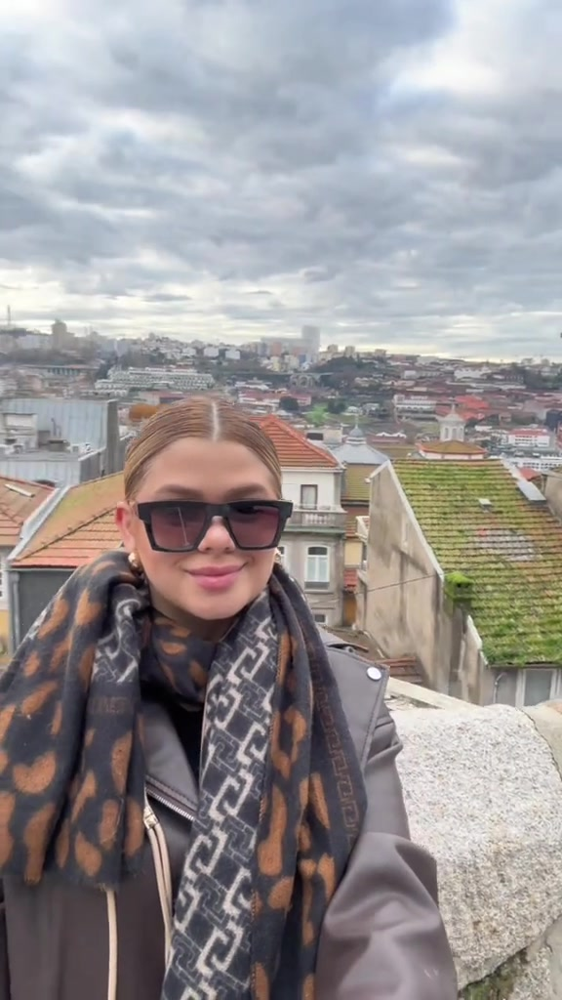
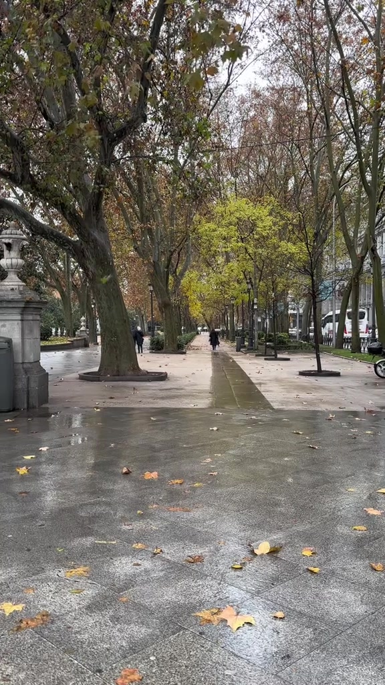
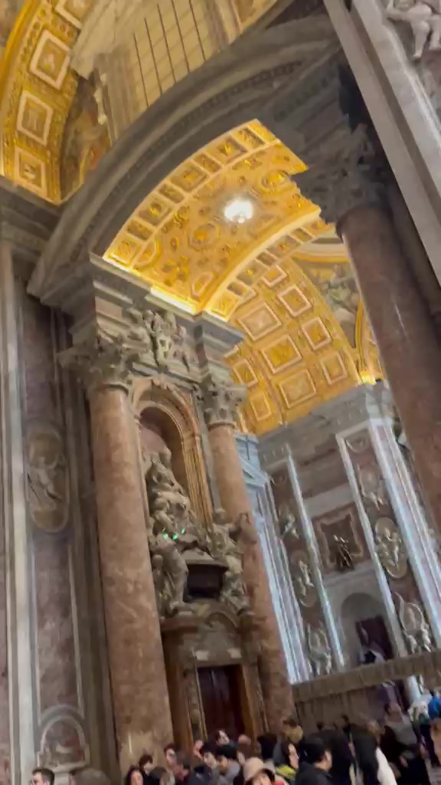
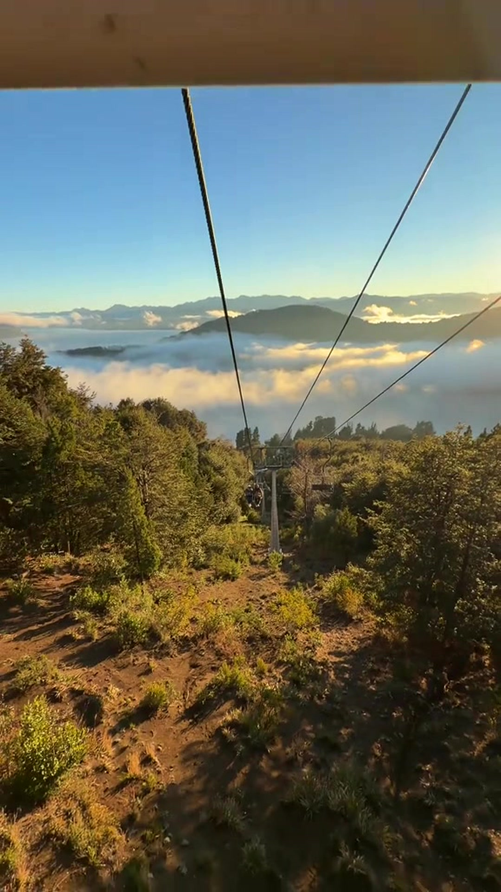
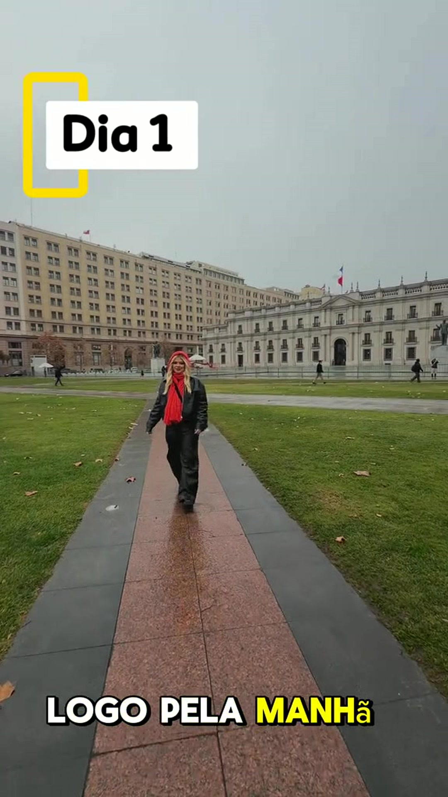

DIÁRIO DE ROTAS REAIS
Histórias que começam
com uma viagem.
O roteiro que conecta quatro países e resume o propósito do Diário da Duda: transformar experiências vividas em caminhos mais simples para outras pessoas viajarem.
DESTINOS PELO MUNDO
Um passaporte,
nove países.
Esta edição reúne somente destinos com registros selecionados para o portfólio. Use os filtros e vá direto ao capítulo que quiser explorar.

01BRAmérica do SulBrasilPonto de partida
02ITEuropaItáliaDestino revisitado
03CHEuropaSuíçaPaisagem em movimento
04FREuropaFrançaArte e cidade
05PTEuropaPortugalUm dia no Porto
06ESEuropaEspanhaMadri em um dia
07VAEuropaVaticanoMemória de viagem
08ARAmérica do SulArgentinaRoteiro em Bariloche
09CLAmérica do SulChileRoteiro de 3 diasROTEIROS QUE AJUDAM
Roteiros para
salvar e viver.
Conteúdos que unem experiência, organização e referências práticas — sem deixar de mostrar o que tornou cada viagem especial.
Os valores citados no vídeo correspondem ao período da viagem.
ITÁLIA EM CAPÍTULOS
Itália,
um lugar para voltar.
Verona, Toscana, Ligúria e Florença formam um capítulo maior: diferentes ritmos, histórias e formas de viver o mesmo país.
OUTROS CAMINHOS
Cada destino,
um jeito de contar.
Grandes roteiros e pequenos achados convivem na mesma página para mostrar variedade, presença e olhar de criadora.
MEMÓRIAS EM MOVIMENTO
Pequenos instantes
também viram memória.
Cenas curtas entram como respiro entre os roteiros: a paisagem da Suíça e um instante vivido no Vaticano.
PARCERIA CONFIRMADA
Tour Curitiba,
benefícios vividos na prática.
Três conteúdos reais em restaurantes de Curitiba, mostrando experiências gastronômicas e as vantagens utilizadas pela Duda.
CONHECER AS PARCERIAS ↗Todos os destinos e experiências apresentados foram vividos pela Duda. Visitar um país não significa patrocínio; colaborações comerciais são identificadas somente quando confirmadas.
PROJETOS & COLABORAÇÕES
SEU DESTINO PODE SER O PRÓXIMO CAPÍTULO.
Para campanhas, experiências e histórias de viagem criadas com verdade.